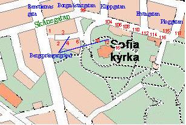
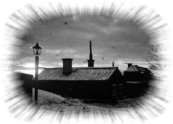
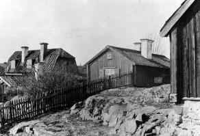
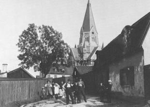
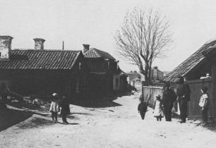
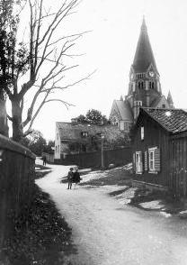
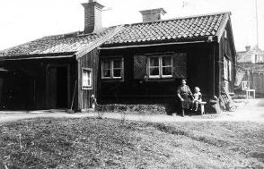
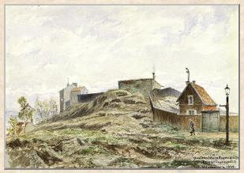
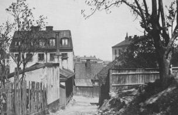
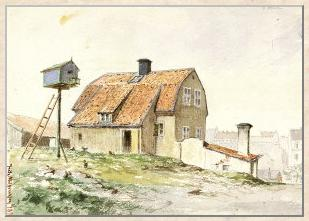

Södermalm i tid och rum
Bergsprängargränd Ur Kulturhus på Söder och Djurgården, Arne Eriksson, 1999
|
 1850 1885 Gatunamnens historia Panorama av Heinrich Neuhaus, 1870
|
 Bergsprängargränd 4 och 2 från NO. Vintermotiv i gryningen 1926.
Innan Sofia kyrka byggdes sträckte sig Bergsprängargränd öster ut över berget mot Stora Mejtens gränd. |
| Bergsprängargränd 1 |
Tomten uppläts 1746. Byggnaden är troligen uppförd mellan 1810 och 1817 och ombyggdes 1967. Bilden är tagen västerut från Skånegatan vid hörnet av Renstjernas gata.
|


|
 Bergsprängargränd 2-4 från SO, gårdssidan. Nr 2 är detsamma som Renstiernas Gata 35. Bilden är tagen 1892. |
Tomten uppläts 1774 och bebyggdes kort därefter med den nuvarande envåningsbyggnaden som ombyggdes 1962. |
|
  Bergsprängargränd österut. Nr 2, 4 och 6 till höger. Till vänster nr 3. Bergsprängargränd österut. Nr 2, 4 och 6 till höger. Till vänster nr 3.År 1906. |
  Bergsprängargränd västerut. Nr 4 och 2 till vänster. Till höger nr 3. Bergsprängargränd västerut. Nr 4 och 2 till vänster. Till höger nr 3.År 1899 Nutid 2002 |
|
Bergsprängargränd 6
Den västra tomtdelen vid Bergsprängargränd uppläts 1735, den östra 1737. Tomten sammanslogs och utökades åt söder på 1760-talet. Stenhuset omtalas som nytt 1770. Lusthuset invid västra tomtgränsen finns omnämnt 1812. Den första ägaren var ullkammaren Lars Myrman. Han efterträddes av skeppstimmermannen Jonas Thylander, som snart sålde till järnbäraren Erich Mattsson. År 1755 förvärvade vaktmästaren Carl Rydvall fastigheten som några år senare (1765) »genom skedda intagor av stadens däromkring belägna öppna mark blivit ansenligen vidgad«. Senare ägare har bl.a. varit traktörs- och handelsmansänkor, bagare, handelsbokhållare, slaktargesäll och tumstocksfabrikör. Från 1874 till dess staden förvärvade fastigheten 1900 står smedmästaren Laurentius eller Lars Ludvig Blomqvist, hans änka och son som ägare. Se även s. 151. |
 Bergsprängargränd 4-6 österut. Nr 6 längst bort nedanför kyrkan. Bilden från 1920 |

{kind=link}
{kind=link}
{kind=link}
{kind=link}
{kind=link}
|
Se upp för vår röda klut! Snart blåser det sten som snus ur en strut!
Den som sår dynamit Ur Bergsprängarnas sång i Sigfrid Siwertz' Lördagskvällar, 1917
 Bergsprängargränd 10 år 1920
 Bergsprängargränd 12 och 16 från norr. Akvarell av Fritz Ahlgrensson 1899. |
  Bergsprängargränd norrut mot Skånegatan öster om nuvarande kyrkan. Gränden mynnar i Skånegatan strax väster om Erstagatan mellan Skånegatan 110 och 108. Bergsprängargränd norrut mot Skånegatan öster om nuvarande kyrkan. Gränden mynnar i Skånegatan strax väster om Erstagatan mellan Skånegatan 110 och 108.
Några bostäder på Bergsprängargränd år 1897 I ett äldre trähus bodde i 1 rum med kakelugn (golvyta 12 kvm, takhöjd 1.85 m) 2 hamnarbetarfamiljer (den ena inneboende hos den andra för 72 kronor i årshyra) om tillsammans 6 personer (4 vuxna och 2 barn). I ett äldre stenhus bodde i 1 rum (golvyta 12.22 kvm, takhöjd 2.11 m) med spis (uppsatt på foten av en riven kakelugn) sammanlagt 6 personer, nämligen en familj med man, hustru och 3 barn samt en inneboende, som betalade 72 kronor i årshyra. Man "måste gå flere gator o. gränder för att komma till vatten." Huset ägdes av kommunen och arrenderades av Kristna välgörenhetsföreningen.
 Bergsprängargränd 16. Akvarell av Fritz Ahlgrensson 1899. Huset revs senare för att lämna plats åt Sofia kyrka. |